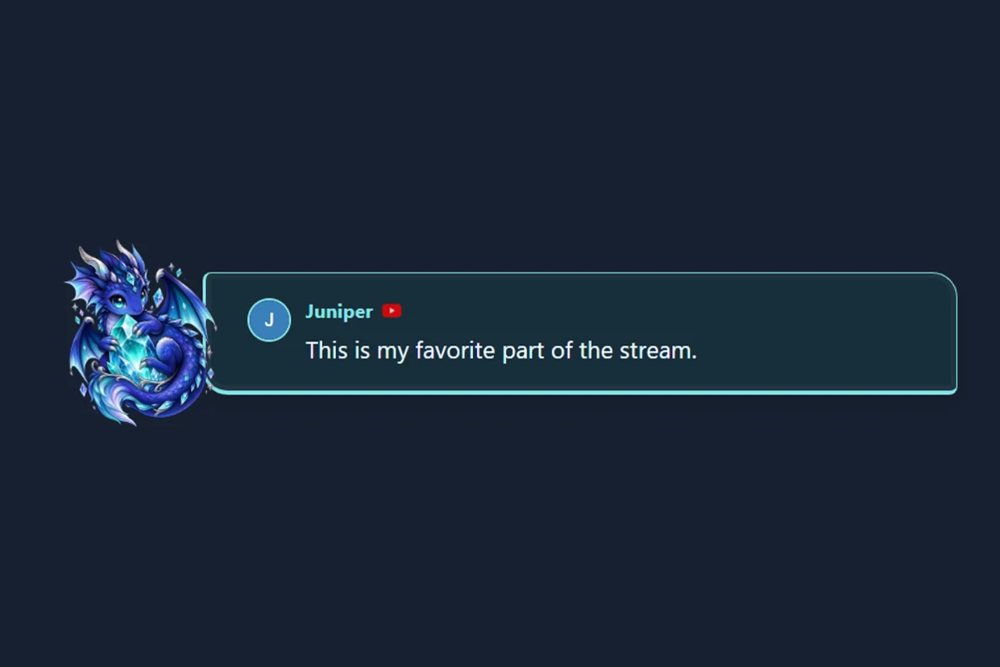
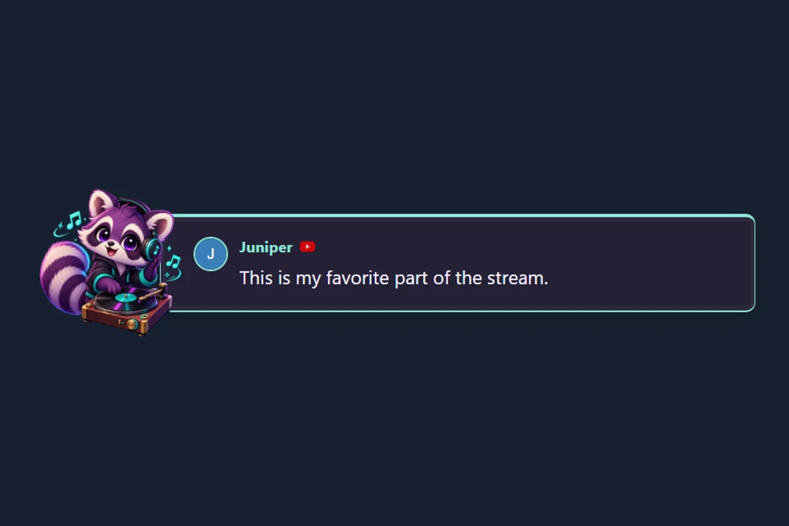
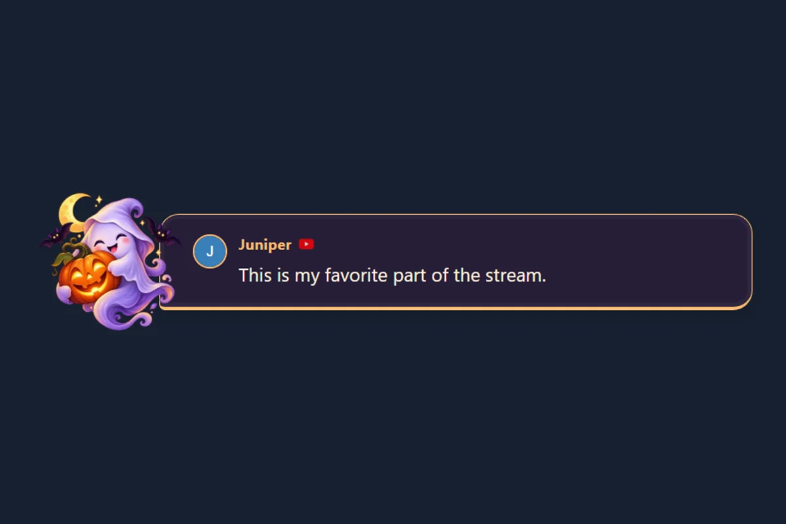
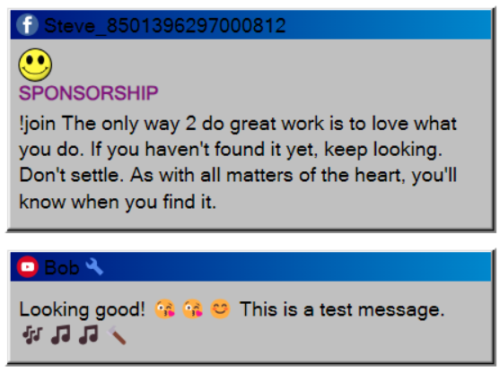
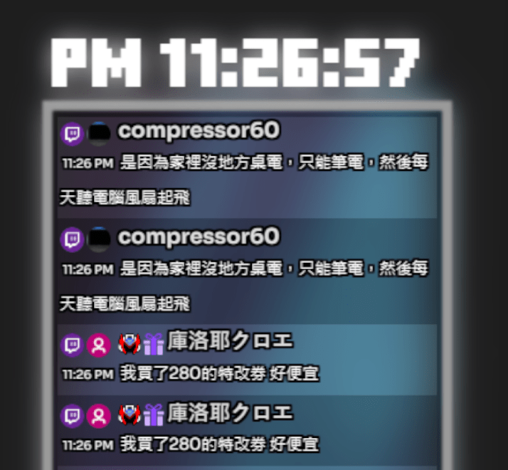
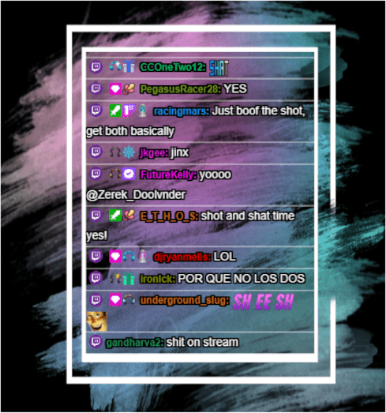
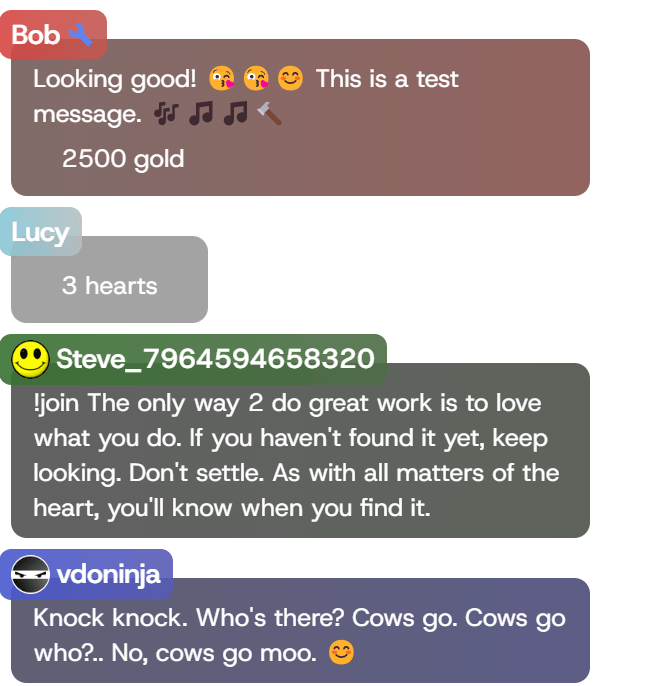

🐱 Strawberry Cat
Chat calico endormi, lait à la fraise et papeterie rose tendre. Comprend des styles assortis pour le chat, les messages mis en avant et les alertes.
Prévisualiser et utiliser le packParcourez la galerie visuelle complète des incrustations, ou explorez les modèles personnalisés et les importations ci-dessous.
Un fil continu provenant de vos plateformes connectées. Commencez par un modèle de chat ou le dock.
Un message que vous sélectionnez dans le dock. Choisissez un style de message mis en avant pour les interviews, questions-réponses ou dédicaces.
Célébrez les nouveaux followers, les abonnements et les dons. Configurez les animations et le son dans les paramètres d’alertes SSN. Guide des alertes
Trouvez le modèle idéal pour votre diffusion
Un même style sur trois sources Navigateur. Dans la galerie, choisissez Utiliser l'ensemble assorti, saisissez les informations de votre session, puis copiez les liens pour OBS. Les animations sont facultatives.
Chat calico endormi, lait à la fraise et papeterie rose tendre. Comprend des styles assortis pour le chat, les messages mis en avant et les alertes.
Prévisualiser et utiliser le pack
Un corgi joyeux sur une carte postale bleu ciel. Comprend des styles assortis pour le chat, les messages mis en avant et les alertes.
Prévisualiser et utiliser le pack
Une grenouille de conte dans une forêt paisible. Comprend des styles assortis pour le chat, les messages mis en avant et les alertes.
Prévisualiser et utiliser le pack
Un lapin astronaute flottant dans une poussière d’étoiles lilas. Comprend des styles assortis pour le chat, les messages mis en avant et les alertes.
Prévisualiser et utiliser le pack
Un petit dragon avec un cristal enchanté lumineux. Comprend des styles assortis pour le chat, les messages mis en avant et les alertes.
Prévisualiser et utiliser le pack
Raton laveur au casque et vinyle en menthe et prune. Comprend des styles assortis pour le chat, les messages mis en avant et les alertes.
Prévisualiser et utiliser le pack
Fantôme sympathique, citrouille lumineuse et tons prune nocturnes. Comprend des styles assortis pour le chat, les messages mis en avant et les alertes.
Prévisualiser et utiliser le pack
Renne en écharpe et sapin de fête. Comprend des styles assortis pour le chat, les messages mis en avant et les alertes.
Prévisualiser et utiliser le packPacks thématiques complets avec documentation, images d’exemple et guides

Un thème soigné et entièrement animé, avec des couleurs personnalisables et des transitions fluides. Idéal pour les diffusions de jeux vidéo.

Une incrustation de chat nostalgique au style Windows 3.1, avec des fenêtres classiques et des détails au pixel près.

Un design moderne et épuré, avec des animations fluides et une excellente lisibilité. Palettes de couleurs personnalisables.
Modèles prêts à l’emploi nécessitant uniquement votre identifiant de session

Un modèle simple et léger avec les fonctions essentielles. Un point de départ idéal pour la personnalisation.

Design élégant avec des animations fluides et des effets visuels. Attrayant sans distraire.

Un thème affirmé et très contrasté pour les diffusions de jeux vidéo, offrant une excellente lisibilité même pendant les séquences rapides.

Une incrustation de chat élégante en verre liquide animé, avec des animations fluides et un rendu soigné des émoticônes.
Modèles compatibles avec les styles CSS YouTube

Utilisez du CSS conçu pour YouTube avec notre page d’incrustation structurée comme YouTube. Compatible avec les styles Septapus.
Points de départ pour créer vos propres incrustations
Le minimum de code pour créer votre propre incrustation. Idéal pour les développeurs et le codage assisté par LLM.
Un point de départ plus complet, avec commentaires et documentation pour créer vos propres incrustations.
Vous avez créé un excellent modèle pour Social Stream Ninja ? Partagez-le avec la communauté en proposant une pull request sur notre dépôt GitHub.
Proposer sur GitHubVous découvrez l’importation ? Lire le guide complet des thèmes de chat pour trouver les fichiers du widget, les formats pris en charge, la configuration OBS et le dépannage.
Fonctionne avec l’application de bureau SSN pour Windows et l’extension Chrome ; aucune modification de code n’est nécessaire.
Ouvrez les sources de vos plateformes dans l’application ou l’extension SSN, puis envoyez un message de test. Continuez uniquement après son apparition dans le dock SSN.
Utilisez le ZIP, le dossier ou les fichiers fournis par le créateur du widget. Une exportation utile contient généralement le HTML, le CSS, le JavaScript, les champs/données et les ressources. Une capture d’écran ou une URL d’incrustation StreamElements ne suffit pas.
Ouvrez l’importateur et choisissez le ZIP, le dossier ou les fichiers. Il détecte les éléments du widget et affiche aussitôt un aperçu de démonstration.
Ouvrir l’importateur de widgetsOuvrir l’importateur depuis le panneau SSN renseigne automatiquement l’identifiant de session et le mot de passe. Si vous l’avez ouvert directement, copiez-les depuis Options de session (Session Options) dans l’application ou l’extension. Saisissez l’identifiant de session une seule fois dans l’importateur ; il est enregistré dans le fichier téléchargé.
Si le widget importé propose des paramètres compatibles, utilisez Historique des messages (Message history) pour désactiver la suppression temporisée ou modifier le nombre de messages conservés à l’écran. Cela modifie les paramètres du widget, pas son code.
Aperçu de démonstration (Demo Preview) vérifie le design avec des messages d’exemple. Aperçu en direct (Live Preview) vérifie la session avec de vrais messages de l’application ou de l’extension SSN en cours d’exécution.
Cliquez sur Télécharger le HTML OBS (Download OBS HTML). Dans OBS, ajoutez une source Navigateur et activez Fichier local, puis sélectionnez le fichier HTML téléchargé. N’ajoutez pas l’identifiant de session et ne modifiez pas l’URL dans OBS. Gardez SSN ouvert pendant la diffusion ; l’importateur et StreamElements peuvent être fermés.
Examinez les fichiers détectés dans l’importateur et utilisez Sélection avancée des fichiers s’il a choisi le mauvais HTML, CSS ou JavaScript.
Vérifiez que le chat arrive au dock SSN et que l’identifiant de session et le mot de passe facultatif correspondent exactement.
Utilisez le fichier HTML téléchargé, puis actualisez la source Navigateur OBS. La page d’importation, le ZIP original et l’URL StreamElements ne sont pas le fichier à utiliser.
Suivez ces étapes simples pour commencer
Parcourez la bibliothèque et choisissez un modèle adapté au style de votre diffusion. Comparez les designs dans la galerie de captures ; la plupart des modèles intégrés fonctionnent directement depuis une URL, sans téléchargement.
Remplacez YOURSESSIONID dans l’URL du modèle par votre véritable identifiant de session Social Stream Ninja, disponible sous Options de session dans l’application ou l’extension SSN. Ajoutez le mot de passe facultatif si votre session en utilise un.
https://socialstream.ninja/themes/pretty.html?session=YOURSESSIONID
Ajoutez l’URL modifiée comme source Navigateur dans votre logiciel de diffusion :
Personnalisez votre incrustation avec du CSS selon l’une de ces méthodes :
&css=URL_TO_YOUR_CSS_FILE à l’URL de votre modèle&b64css=YOUR_BASE64_ENCODED_CSSPartez d’une incrustation fonctionnelle, puis modifiez son apparence.
Utiliser une source Navigateur OBS CSS personnalisé pour les couleurs, l’espacement et la typographie. Gardez l’URL SSN et la connexion originales.
Vous avez exporté un widget de chat StreamElements ? Ouvrir le convertisseur StreamElements, prévisualisez-le, puis téléchargez le HTML OBS. Utilisez le ZIP ou les fichiers originaux, pas une capture d’écran ni une URL d’incrustation. Voir la configuration ci-dessous.
Copiez un modèle fonctionnel et modifiez son HTML, son CSS et son JavaScript. Démarrage rapide · Guide de développement · Champs d’événements
Pour un comportement fondé sur des déclencheurs, commencez par l’ éditeur Event Flow et règles d’effets d’alerte avant d’écrire une nouvelle incrustation.
Choisissez un point de départ, copiez la consigne et remplacez les détails de design entre crochets. Joignez les fichiers sources si votre IA ne peut pas lire les liens. N’incluez pas votre identifiant de session privé ni votre mot de passe dans la conversation.
Vous convertissez un widget plus complexe ? Utiliser la consigne complète de conversion StreamElements / Streamlabs.
Apprenez à créer une incrustation de chat personnalisée avec l’aide d’une IA